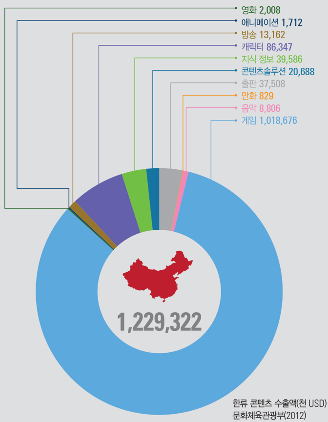
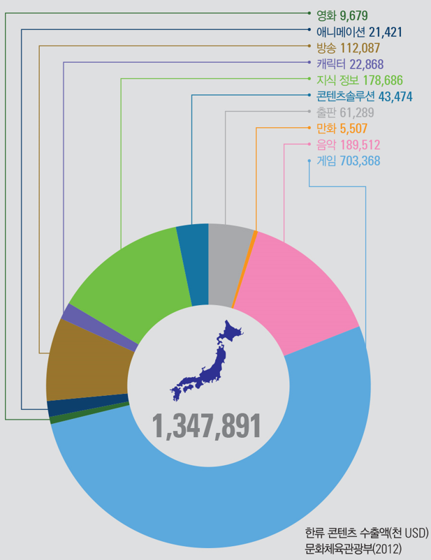
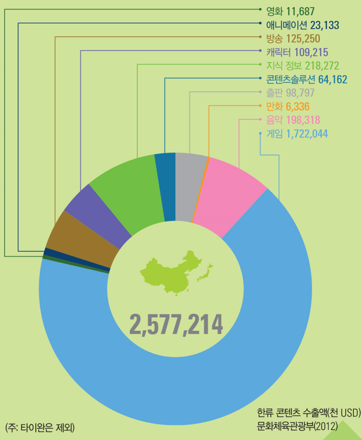
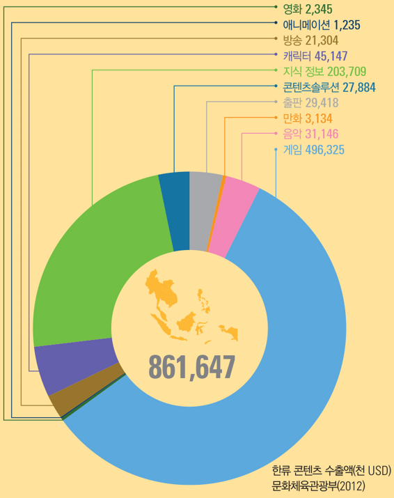
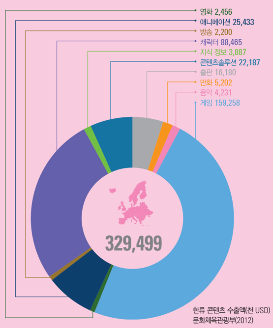
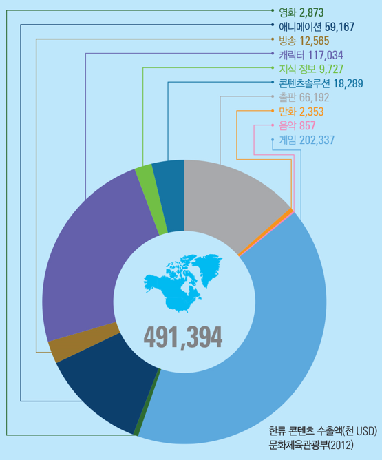

| 1번 |
중국 |
중국에서의 한류는 1990년대 말 드라마의 수출로 시작되었다.
우리나라의 전통적인 정서를 바탕으로 하는 드라마가 인기를 끌었고,
중국에서의 방송 콘텐츠의 성공은 우리나라 관련 산업의 성장에 큰 기여를 했다.
우리나라 콘텐츠 산업 수출의 약 27.6%가 중국을 대상으로 하고 있다.
드라마에 등장했던 혹은 중국인이 선호하는 한류 스타의 애장품으로 소개되는 화장품,
의류, 액세서리 등의 공산품은 또 다른 수출 품목이 되었으며,
한국 음식에 대한 선호로 인해 관련 업계가 중국 보톤에 활발히 진출하고 있다.
또한 한류는 중국인 관강객의 증가로 이어지면서 국내 관강 산업에 영향을 미치고 있다. |

|
| 2번 |
일본 |
일본은 전 세계에서 우리나라 콘텐츠를 가장 많이 수입하는 나라로,
방송 콘텐츠 수출의 약 60%, 음악 콘텐츠 수출의 약 80% 정도를
일본에서 수입하고 있다. 중장년 여성층의 드라마 선호를 통해
서서히 형성된 일본 내 한류의 분위기는 여전하며, 최근에는 중장년층 남성과
10~30대에 이르는 젊은층 등 폭넓은 대상에 한류가 확산되고 있다.
또한, K-pop 아티스트의 곡은 물론이고, 힙합, 록, 등 다양한 장르의 음악까지
인기를 얻고 있다. 이러한 이유로 최근에는 신인 혹은 정식으로 데뷔하지 않은
연예인까지 인볼에서 활동하는 경우를 종종 볼 수 있다.
|
 |
| 3번 |
동아시아 |
동아시아에서의 한류는 일본, 중국, 타이완을 중심으로 이루어지고
있다. 동아시아의 공통적인 정서인 가족애, 효, 휴머니티 등을 주제로
하는 드라마가 인기를 끌고 있으며, 아이돌 중심의 K-pop이 많은 사랑을 받고 있다.
최근에는 콘텐츠 중심의 한류를 뛰어 넘어, 드라마에 등장한 혹은 한국 연예인들이
착용하는 상품의 선호가 늘고 있어 화장품, 의류, 한국 식품 등 공산품의 수출도
증가하고 있는 추세이다. 동아시아에서의 주요 콘텐츠 수출 분야로는 게임(66.8%),
지식 정보(8.5%), 음악(7.7%) 등을 들 수 있다.
|
 |
| 4번 |
동남아시아 |
동남아시아의 한류는 타이, 베트남, 인도네시아 등에서 활발하며,
게임, 음악, 드라마 등 다양한 한류 콘텐츠가 인기를 끌고 있다.
최근에는 우리나라 문화 콘텐츠를 모방한 TV 프로그램, 가수 등이
등장하고 있다. 이러한 경향을 반영해 동남아시아서의 주요 콘텐츠 수출 분야는
게임(57.6%), 지식 정보(23.6%), 캐릭터(5.2%) 등으로 나타난다.
동남아시아에서의 한류는 단순한 콘텐츠 선호에 그치는 것이 아니라 동남아시아 관광객
유치에도 많은 영향을 주고 있다.
|
 |
| 5번 |
유럽 |
동유러베서는 드라마 수출을 계기로 한류가 시작된 반면, 서유럽에서는
캐릭터, 애니메이션, 다큐멘터리 등 방송 콘텐츠가 그 시발이 되었다.
최근에는 젊은 층을 중심으로 하는 K-pop이 인기를 얻고 있으며, 특히 프랑스엣는
K-pop 댄스만을 선보이는 팀이 다수 활동하고 있다. 또한, 한국어과를 설치하는
대학이 늘어나고 있고, 한류만을 다루는 잡지가 등장하고 있는가 하면, 한국 영화의
정기 상영이 확산되고 있다. 유럽에서의 주요 콘텐츠 수출 분야로는 게임(48.3%),
캐릭터(26.8%), 애니메이션(7.7%) 등을 들 수 있다.
|
 |
| 6번 |
북아메리카 |
문화적 유사성이 적은 북아메리카 지역에서도 한류를 확인할 수 있다.
북아메리카에서 한류의 핵심적인 성공 요인은 가족 중심의 사랑, 순수한 정,
어른을 공격하는 문화 등을 바탕으로 하는 콘텐츠의 신선함을 꼽을 수 있다.
또한 북아메리카 내에는 아시아에서 건너 온 이민자가 상당수 있기 때문에
자연스럽게 한류가 흡수될 수 있는 여건이 이미 조성되었던 것도 주요한 원인 중
하나이다. 콘텐츠 중심의 선호뿐만 아니라, 최근에는 한식의 확대, 할리우드 영화
산업의 진출 등으로 북아메리카에서의 한류는 다각화되고 있다. 북아메리카에서는
게임(41.2%), 캐릭터(23.8%), 출판(13.5%) 등을 주요 콘텐츠 수출 분야로 꼽을 수 있다.
|
 |